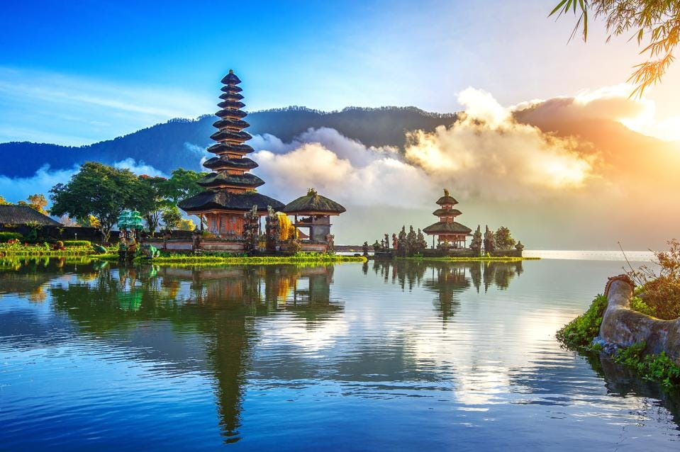

London

London is the capital and largest city of England and the United Kingdom, with a population of just under 9 million. It stands on the River Thames in south-east England at the head of a 50-mile (80 km) estuary down to the North Sea, and has been a major settlement for two millennia. The City of London, its ancient core and financial centre, was founded by the Romans as Londinium and retains its medieval boundaries.The City of Westminster, to the west of the City of London, has for centuries hosted the national government and parliament. Since the 19th century, the name "London" has also referred to the metropolis around this core, historically split between the counties of Middlesex, Essex, Surrey, Kent, and Hertfordshire, which largely comprises Greater London, governed by the Greater London Authority.
As one of the world's major global cities, London exerts a strong influence on its arts, entertainment, fashion, commerce and finance, education, health care, media, science and technology, tourism, and transport and communications. Its GDP (€801.66 billion in 2017) makes it the largest urban economy in Europe, and it is one of the major financial centres in the world. With Europe's largest concentration of higher education institutions,it is home to some of the highest-ranked academic institutions in the world—Imperial College London in natural and applied sciences, the London School of Economics in social sciences, and the comprehensive University College London. London is the most visited city in Europe and has the busiest city airport system in the world. The London Underground is the oldest rapid transit system in the world.
London's diverse cultures encompass over 300 languages. The mid-2018 population of Greater London of about 9 million made it Europe's third-most populous city,[26] accounting for 13.4% of the population of the United Kingdom and over 16% of the population of England. The Greater London Built-up Area is the fourth-most populous in Europe with about 9.8 million inhabitants at the 2011 census. The London metropolitan area is the third-most populous in Europe with about 14 million inhabitants in 2016, granting London the status of a megacity.
London has four World Heritage Sites: the Tower of London; Kew Gardens; the combined Palace of Westminster, Westminster Abbey, and St Margaret's Church; and also the historic settlement in Greenwich, where the Royal Observatory, Greenwich defines the prime meridian (0° longitude) and Greenwich Mean Time. Other landmarks include Buckingham Palace, the London Eye, Piccadilly Circus, St Paul's Cathedral, Tower Bridge, and Trafalgar Square. London has many museums, galleries, libraries and cultural venues, including the British Museum, National Gallery, Natural History Museum, Tate Modern, British Library, and numerous West End theatres. Important sporting events held in London include the FA Cup Final (held annually at Wembley Stadium), Wimbledon Tennis Championships and the London Marathon. In 2012, London became the first city to host three Summer Olympic Games.
Bali
Bali is a province of Indonesia and the westernmost of the Lesser Sunda Islands. East of Java and west of Lombok, the province includes the island of Bali and a few smaller neighbouring islands, notably Nusa Penida, Nusa Lembongan, and Nusa Ceningan to the southeast. The provincial capital, Denpasar, is the most populous city in the Lesser Sunda Islands and the second-largest, after Makassar, in Eastern Indonesia. The upland town of Ubud in Greater Denpasar is considered Bali's cultural centre. The province is Indonesia's main tourist destination, with a significant rise in tourism since the 1980s. Tourism-related business makes up 80% of its economy.
Bali is the only Hindu-majority province in Indonesia, with 86.9% of the population adhering to Balinese Hinduism. It is renowned for its highly developed arts, including traditional and modern dance, sculpture, painting, leather, metalworking, and music. The Indonesian International Film Festival is held every year in Bali. Other international events held in Bali include the Miss World 2013, 2018 Annual Meetings of the International Monetary Fund and the World Bank Group and 2022 G20 summit. In March 2017, TripAdvisor named Bali as the world's top destination in its Traveller's Choice award, which it also earned in January 2021.
Bali is part of the Coral Triangle, the area with the highest biodiversity of marine species, especially fish and turtles. In this area alone, over 500 reef-building coral species can be found. For comparison, this is about seven times as many as in the entire Caribbean. Bali is the home of the Subak irrigation system, a UNESCO World Heritage Site. It is also home to a unified confederation of kingdoms composed of 10 traditional royal Balinese houses, each house ruling a specific geographic area. The confederation is the successor of the Bali Kingdom. The royal houses are not recognised by the government of Indonesia; however, they originated before Dutch colonisation.
Dubai
.jpg)
Dubai Gulf Arabic pronunciation: [də'baj]) is the most populous city in the United Arab Emirates (UAE) and the capital of the Emirate of Dubai, the most populated of the 7 emirates of the United Arab Emirates. Established in the 18th century as a small fishing village, the city grew rapidly in the early 21st century with a focus on tourism and luxury, having the second most five-star hotels in the world, and the tallest building in the world, the Burj Khalifa, which is 828 metres (2,717 ft) tall.
In the eastern Arabian Peninsula on the coast of the Persian Gulf, it is also a major global transport hub for passengers and cargo. Oil revenue helped accelerate the development of the city, which was already a major mercantile hub. A centre for regional and international trade since the early 20th century, Dubai's economy relies on revenues from trade, tourism, aviation, real estate, and financial services. Oil production contributed less than 1 percent of the emirate's GDP in 2018. The city has a population of around 3.49 million (as of 2021).